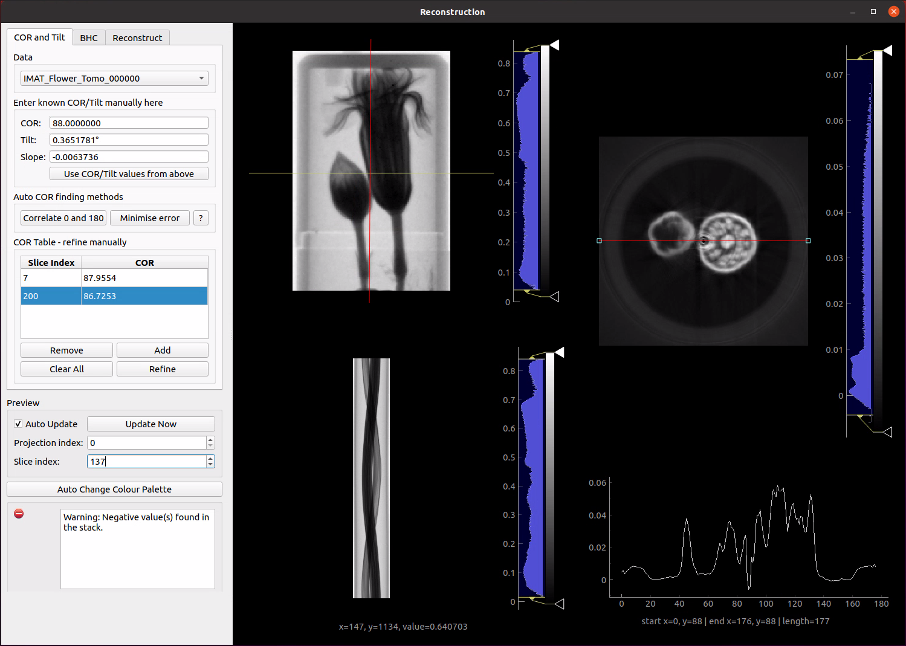

Reconstruction Window¶
The reconstruction window contains the tools for center of rotation (COR) and tilt alignment, beam hardening correction (BHC) and tomographic reconstruction.
{kind=link}
The main part of the window shows the currently selected stack in projection and sinogram space and a preview reconstruction of the currently selected slice. The slice can be selected by clicking in the projection view or using the controls in the Preview section.
Underneath the preview reconstruction is a line profile plot. This plots the pixel values of a line region taken from the preview reconstruction. The red line through the middle of the preview can be moved to select the region of interest to plot. The handles at either end of the line can be used to resize or change the angle of the line region. The line profile plot gives greater visibility of the detail of the reconstruction preview and the effect of changes in reconstruction parameters. Once moved, the line can be reset to its original position by right clicking the reconstruction preview image and selecting Reset Profile Line from the menu.
Previews are automatically updated when parameters are changed. For reconstructions that take a long time to run, such as iterative algorithms, it is worthwhile to disable the Auto Update option and trigger preview updates manually using the Update Now button.
COR and Tilt¶
Is described in the section Center of Rotation and Tilt
Beam Hardening Correction¶
Mantid Imaging implements a linearization correction to compensate for the beam hardening effect. This is applied to the projection pixel values before being passed to the reconstruction algorithm. First we convert from transmission to line density as normal:
then a polynomial correction is applied:
The coefficients \(a_0, a_1, a_2, a_3\) can be input by the user on the BHC tab in the reconstruction window.